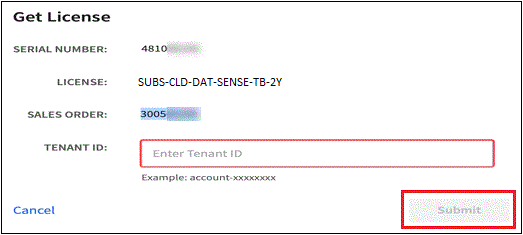
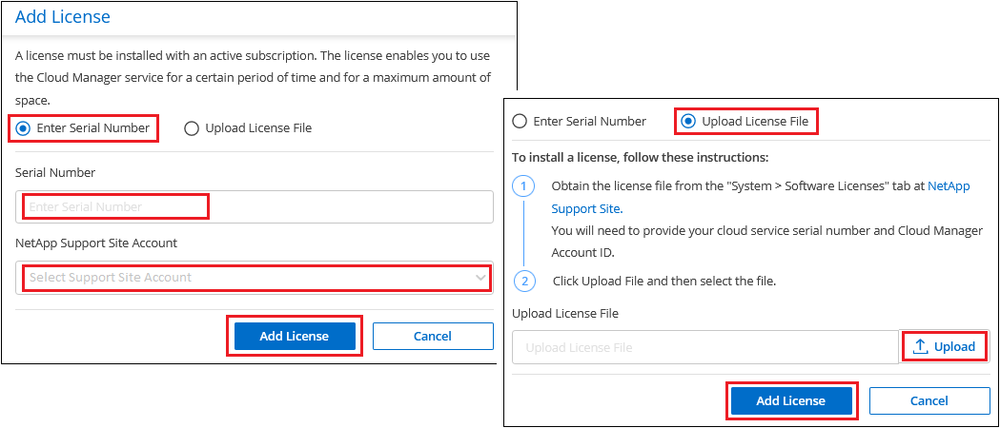
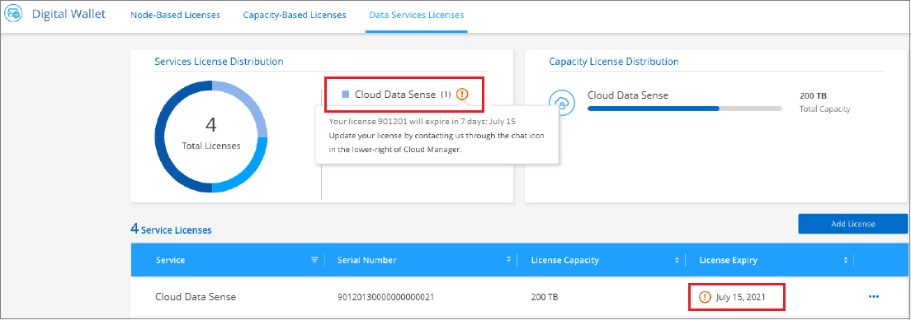

Request doc changes
Request doc changes Edit this page
Edit this page Learn how to contribute
Learn how to contributeSet up licensing for Cloud Data Sense
Contributors
The first 1 TB of data that Cloud Data Sense scans in a Cloud Manager workspace is free. A BYOL license from NetApp, or a Cloud Manager subscription from your cloud provider’s marketplace, is required to continue scanning data after that point.
A few notes before you read any further:
-
If you’ve already subscribed to the Cloud Manager pay-as-you-go (PAYGO) subscription in your cloud provider’s marketplace, then you’re automatically subscribed to Cloud Data Sense as well. You won’t need to subscribe again.
-
The Cloud Data Sense bring-your-own-license (BYOL) is a floating license that you can use across all the working environments and data sources in the workspace that you plan to scan. You’ll see an active subscription in the Digital Wallet.
Use a Cloud Data Sense PAYGO subscription
Pay-as-you-go subscriptions from your cloud provider’s marketplace enable you to license the use of Cloud Volumes ONTAP systems and many Cloud Data Services, such as Cloud Data Sense.
You can subscribe at any time and you will not be charged until the amount of data exceeds 1 TB. You can always see the total amount of data that is being scanned from the Data Sense Dashboard. And the Subscribe Now button makes it easy to subscribe when you are ready.

These steps must be completed by a user who has the Account Admin role.
-
In the upper right of the Cloud Manager console, click the Settings icon, and select Credentials.

-
Find the credentials for the AWS Instance Profile, Azure Managed Service Identity, or Google Project.
The subscription must be added to the Instance Profile, Managed Service Identity, or Google Project. Charging won’t work otherwise.
If you already have a subscription (shown below for AWS), then you’re all set—there’s nothing else that you need to do.

-
If you don’t have a subscription yet, hover over the credentials, click the action menu, and click Associate Subscription.

-
Select an existing subscription and click Associate, or click Add Subscription and follow the steps.
The following video shows how to associate an AWS Marketplace subscription to an AWS subscription:
The following video shows how to associate an Azure Marketplace subscription to an Azure subscription:
The following video shows how to associate a GCP Marketplace subscription to a GCP subscription:
Use a Cloud Data Sense BYOL license
Bring-your-own licenses from NetApp provide 1-, 2-, or 3-year terms. The BYOL Cloud Data Sense license is a floating license where the total capacity is shared among all of your working environments and data sources, making initial licensing and renewal easy.
If you don’t have a Cloud Data Sense license, contact us to purchase one:
-
Click the chat icon in the lower-right of Cloud Manager to request a license.
Optionally, if you have an unassigned node-based license for Cloud Volumes ONTAP that you won’t be using, you can convert it to a Cloud Data Sense license with the same dollar-equivalence and the same expiration date. Go here for details.
You use the Digital Wallet page in Cloud Manager to manage Cloud Data Sense BYOL licenses. You can add new licenses and update existing licenses.
Obtain your Cloud Data Sense license file
After you have purchased your Cloud Data Sense license, you activate the license in Cloud Manager by entering the Cloud Data Sense serial number and NSS account, or by uploading the NLF license file. The steps below show how to get the NLF license file if you plan to use that method.
If you’ve deployed Cloud Data Sense on a host in an on-premises site that doesn’t have internet access, you’ll need to obtain the license file from an internet-connected system. Activating the license using the serial number and NSS account is not available for dark site installations.
-
Sign in to the NetApp Support Site and click Systems > Software Licenses.
-
Enter your Cloud Data Sense license serial number.

-
Under License Key, click Get NetApp License File.
-
Enter your Cloud Manager Account ID (this is called a Tenant ID on the support site) and click Submit to download the license file.

You can find your Cloud Manager Account ID by selecting the Account drop-down from the top of Cloud Manager, and then clicking Manage Account next to your account. Your Account ID is in the Overview tab.
Add Cloud Data Sense BYOL licenses to your account
After you purchase a Cloud Data Sense license for your Cloud Manager account, you need to add the license to Cloud Manager to use the Data Sense service.
-
Click All Services > Digital Wallet > Data Services Licenses.
-
Click Add License.
-
In the Add License dialog, enter the license information and click Add License:
-
If you have the Data Sense license serial number and know your NSS account, select the Enter Serial Number option and enter that information.
If your NetApp Support Site account isn’t available from the drop-down list, add the NSS account to Cloud Manager.
-
If you have the Data Sense license file (required when installed in a dark site), select the Upload License File option and follow the prompts to attach the file.

-
Cloud Manager adds the license so that your Cloud Data Sense service is active.
Update a Cloud Data Sense BYOL license
If your licensed term is nearing the expiration date, or if your licensed capacity is reaching the limit, you’ll be notified in Cloud Data Sense.

This status also appears in the Digital Wallet page.

You can update your Cloud Data Sense license before it expires so that there is no interruption in your ability to scan your data.
-
Click the chat icon in the lower-right of Cloud Manager to request an extension to your term or additional capacity to your Cloud Data Sense license for the particular serial number. You can also send an email to request an update to your license.
After you pay for the license and it is registered with the NetApp Support Site, Cloud Manager automatically updates the license in the Digital Wallet and the Data Services Licenses page will reflect the change in 5 to 10 minutes.
-
If Cloud Manager can’t automatically update the license (for example, when installed in a dark site), then you’ll need to manually upload the license file.
-
You can obtain the license file from the NetApp Support Site.
-
On the Digital Wallet page in the Data Services Licenses tab, click
 for the service serial number you are updating, and click Update License.
for the service serial number you are updating, and click Update License.
-
In the Update License page, upload the license file and click Update License.
-
Cloud Manager updates the license so that your Cloud Data Sense service continues to be active.